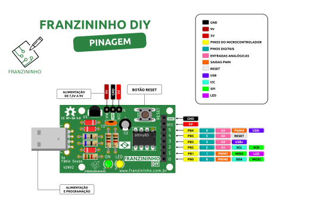

Exemplos AVR Libc - Franininho DIY
O projeto Franzininho tem o objetivo de incentivar as pessoas nas área de eletrônica e programação. Através das oficinas de soldagem e programação na IDE Arduino, diversas pessoas tiveram o seu primeiro contato com essas áreas. Saiba mais sobre o projeto Franzininho.
Esse material tem o objetivo de mostrar os primeiros passos para programação de microcontroladores usando linguagem C e com abordagem mais próxima ao hardware. Serão apresentados uma sequencia de exemplos(com explicação detalhadas sobre a Arquitetura do Attiny85) para programação da Franzininho DIY usando a AVR Libc.
É importante que você tenha o pinout da Franzininho DIY para fazer as ligações conforme orientações nos exemplos.
{kind=link}

Ferramentas necessárias
Você não precisará de um compilador específico ou IDE para compilar os exemplos apresentados. Porém é importante que tenha as seguintes ferramentas instaladas na sua máquina:
- GCC AVR
- avr libc
- binutils-avr
- make
Instalação das ferramentas necessárias (Linux):
sudo apt install gcc-avr
sudo apt install avr-libc
sudo apt install binutils-avr
sudo apt install make
A placa Franzininho deve estar com o bootloader Micronucleus( bootloader oficial para a Franzininho DIY).
Compilação no Linux
cd ../exemplos-avr-libc/exemplos/01-hello
make all
Arduino IDE
Você também poderá reproduzir todos os exemplos apresentados diretamente na IDE Arduino (sem usar o framework Arduino). Isso facilitará no processo de instalação e configuração das ferramentas e também no upload.
Repositórios e materiais de apoio
Todos os exemplos serão hospedados no github do projeto Franzininho. É importante que você use o datasheet do Attiny85 como material de apoio, assim como a documentação da AVR Libc
Aproveite essa jornada.
Saiba mais
Franzininho – Um Arduino para todos
Exemplos AVR LIB C - Franzininho DIY
| Autor | Fábio Souza |
|---|---|
| Data: | 24/04/2021 |